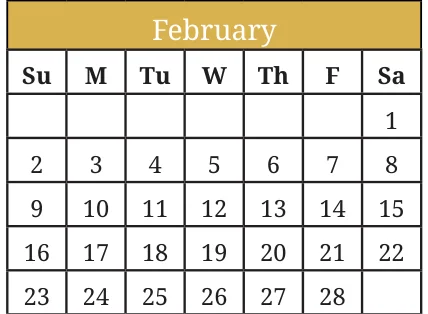
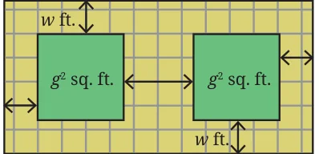
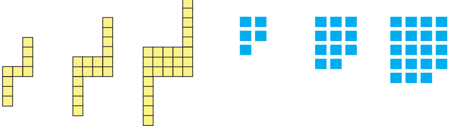
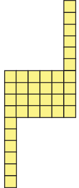

- Compute these products using the suggested identity.
- \(46^2\) using Identity 1A for \((a + b)^2\)
- \(397 \times 403\) using Identity 1C for \((a + b)(a - b)\)
- \(91^2\) using Identity 1B for \((a - b)^2\)
- \(43 \times 45\) using Identity 1C for \((a + b)(a - b)\)
Ans.
(i) \(46^2 = (40 + 6)^2 = 2116\)
(ii) \(397 \times 403 = (400 - 3)(400 + 3) = 159991\)
(iii) \(91^2 = (100 - 9)^2 = 8281\)
(iv) \(43 \times 45 = (44 - 1)(44 + 1) = 1935\)
- Use either a suitable identity or the distributive property to find each of the following products.
- \((p - 1)(p + 11)\)
- \((3a - 9b)(3a + 9b)\)
- \(-(2y + 5)(3y + 4)\)
- \((6x + 5y)^2\)
- \(\left(2x - \frac{1}{2}\right)^2\)
- \((7p) \times (3r) \times (p + 2)\)
Ans.
- \(p^2 + 10p - 11\)
- \(9a^2 - 81b^2\)
- \(-6y^2 - 23y - 20\)
- \(36x^2 + 60xy + 25y^2\)
- \(4x^2 - 2x + \frac{1}{4}\)
- \(21p^2r + 42pr\)
- For each statement identify the appropriate algebraic expression(s).
- Two more than a square number.
\(2 + s\) \((s + 2)^2\) \(s^2 + 2\) \(s^2 + 4\) \(2s^2\) \(2^2 s\)
- The sum of the squares of two consecutive numbers
\(m^2 + n^2\) \((m + n)^2\) \(m^2 + 1\) \(m^2 + (m + 1)^2\)
\(m^2 + (m - 1)^2\) \((m + (m + 1))^2\) \((2m)^2 + (2m + 1)^2\)
Ans.
- Two more than a square number is \(s^2 + 2\).
- The sum of the squares of two consecutive numbers is \(m^2 + (m + 1)^2\).
- Two more than a square number.
- Consider any 2 by 2 square of numbers in a calendar, as shown in the figure.

Find products of numbers lying along each diagonal — \(4 \times 12 = 48\), \(5 \times 11 = 55\). Do this for the other 2 by 2 squares. What do you observe about the diagonal products? Explain why this happens.
Ans. Take 3, 4, 10, 11. Here \(3 \times 11 = 33\), \(4 \times 10 = 40\). We observe that the difference of diagonal products = 7.
Reason: Label the numbers as \(a\), \((a + 1)\), \((a + 7)\), \((a + 8)\).
Diagonal difference \(= (a + 7)(a + 1) - a(a + 8) = 7\).
- Verify which of the following statements are true.
- \((k + 1)(k + 2) - (k + 3)\) is always 2.
- \((2q + 1)(2q - 3)\) is a multiple of 4.
- Squares of even numbers are multiples of 4, and squares of odd numbers are 1 more than multiples of 8.
- \((6n + 2)^2 - (4n + 3)^2\) is 5 less than a square number.
Ans. (i) False (ii) False (iii) True (iv) False
- A number leaves a remainder of 3 when divided by 7, and another number leaves a remainder of 5 when divided by 7. What is the remainder when their sum, difference, and product are divided by 7?
Ans. Let \(n_1 = 7a + 3\) and \(n_2 = 7b + 5\).
- When adding both, the remainder is 1.
- When taking difference, the remainder is 2 (or 5).
- When taking product, the remainder is 1.
- Choose three consecutive numbers, square the middle one, and subtract the product of the other two. Repeat the same with other sets of numbers. What pattern do you notice? How do we write this as an algebraic equation? Expand both sides of the equation to check that it is a true identity.
Ans. Let \((n - 1)\), \(n\) and \((n + 1)\) be the consecutive numbers.
Then \(n^2 - (n - 1)(n + 1) = n^2 - (n^2 - 1) = 1\)
Hence, the result is always 1. Check for different sets of consecutive numbers.
- What is the algebraic expression describing the following steps — add any two numbers. Multiply this by half of the sum of the two numbers? Prove that this result will be half of the square of the sum of the two numbers.
Ans. Let \(a\) and \(b\) be two numbers. Adding both \(= a + b\). Multiplying this by half of the sum:
\((a + b) \times \frac{1}{2}(a + b) = \frac{1}{2}(a + b)^2\)
- Which is larger? Find out without fully computing the product.
- \(14 \times 26\) or \(16 \times 24\)
- \(25 \times 75\) or \(26 \times 74\)
Ans.
(i) Let \(a = 14 \times 26\) and \(b = 16 \times 24\). Now \(a = (16 - 2)(24 + 2) = 16 \times 24 + 32 - 48 - 4 = b - 20\). Hence \(16 \times 24 > 14 \times 26\).
(ii) Let \(a = 25 \times 75\) and \(b = 26 \times 74\). Now \(a = (26 - 1)(74 + 1) = 26 \times 74 + 26 - 74 - 1 = b - 49\). Hence \(26 \times 74 > 25 \times 75\).
- A tiny park is coming up in Dhauli.

The plan is shown in the figure. The two square plots, each of area \(g^2\) sq. ft., will have a green cover. All the remaining area is a walking path \(w\) ft. wide that needs to be tiled. Write an expression for the area that needs to be tiled.
Ans. Length of rectangular park \(= w + g + 2w + g + w = (2g + 4w)\) ft. Breadth \(= (g + 2w)\) ft.
Area of park \(= (2g + 4w)(g + 2w) = 2g^2 + 8w^2 + 8wg\) sq. ft.
Area of the two squares \(= 2g^2\) sq. ft.
So, Area to be tiled \(= (2g + 4w)(g + 2w) - 2g^2 = 8w(w + g)\) sq. ft.
- For each pattern shown below,
- Draw the next figure in the sequence.
- How many basic units are there in Step 10?
- Write an expression to describe the number of basic units in Step y.

Ans.
(a) Step 1: total \(= (2 + 1)^2 = 9\). Step 2: total \(= (2 + 2)^2 = 16\). Step 3: total \(= (2 + 3)^2 = 25\). Next figure (Step 4):

Total \(= (2 + 4)^2 = 36\)
(b) Step 1: \(2^2 + 1 = 5\). Step 2: \(3^2 + 2 = 11\). Step 3: \(4^2 + 3 = 19\). Step 4: \(5^2 + 4 = 29\).
(ii) In figure (a): Basic units in Step \(10 = (2 + 10)^2 = 144\). In figure (b): Basic units in Step \(10 = 11^2 + 10 = 131\).
(iii) In figure (a): Number of basic units in Step \(y = (y + 2)^2\). In figure (b): Number of basic units in Step \(y = (y + 1)^2 + y\).